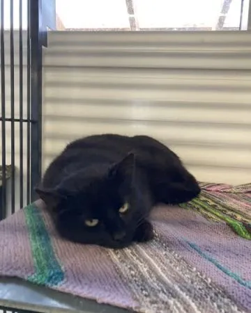
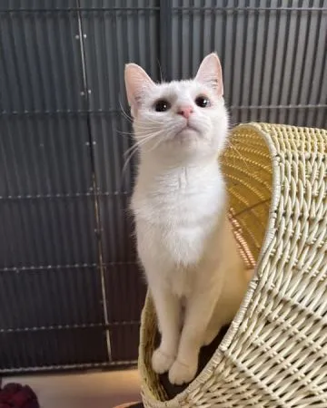

Find et dyr, du vil give en sød overraskelse
På vores internater venter mange dyr på en ny chance i livet. Du kan gøre deres dag lidt lysere ved at give dem Fredagsslik – En lille godbid, der bringer stor glæde.




Giv en godbid, der rækker længere end til fredagsforkælelse. Når du støtter med Fredagsslik, er du med til at give omsorg, mad og tryghed til dyr, der har brug for hjælp. En lille handling kan betyde en verden til forskel.
På vores internater venter mange dyr på en ny chance i livet. Du kan gøre deres dag lidt lysere ved at give dem Fredagsslik – En lille godbid, der bringer stor glæde.
Tag et billede eller optag en video, når du giver dit dyr Fredagsslik, og del det på sociale medier. Brug hashtagget #DyrenesFredagsslik, og hjælp med at sprede budskabet.
Få sidste nyt om dyrevelfærd direkte i din indbakke. Du kan når som helst framelde dig igen.